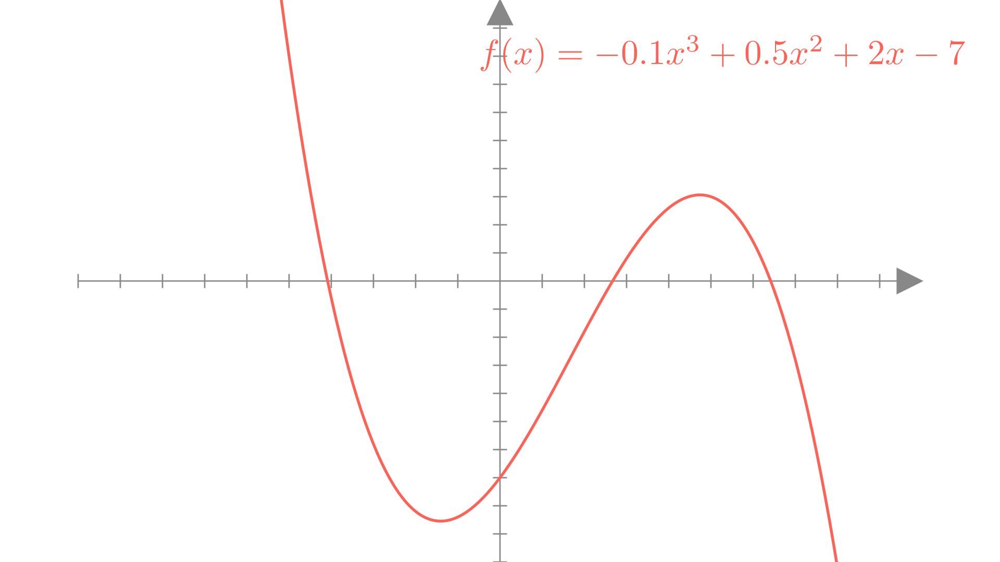
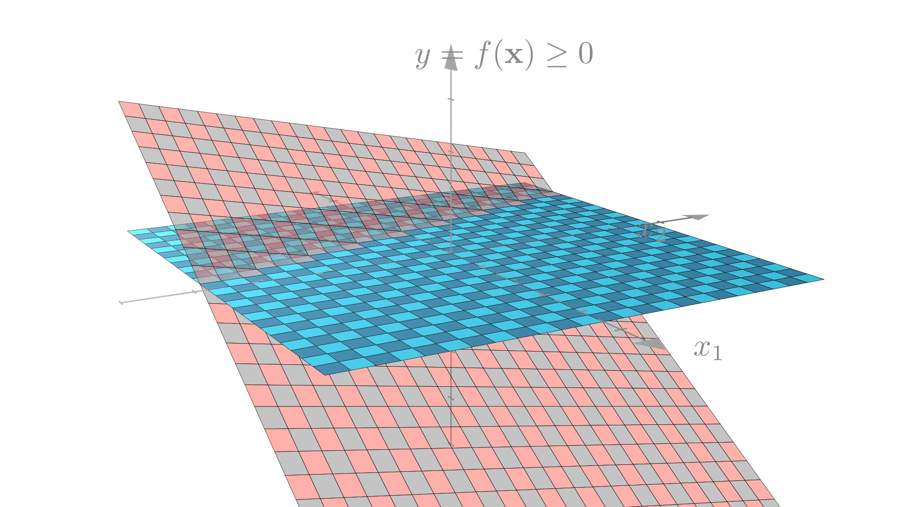
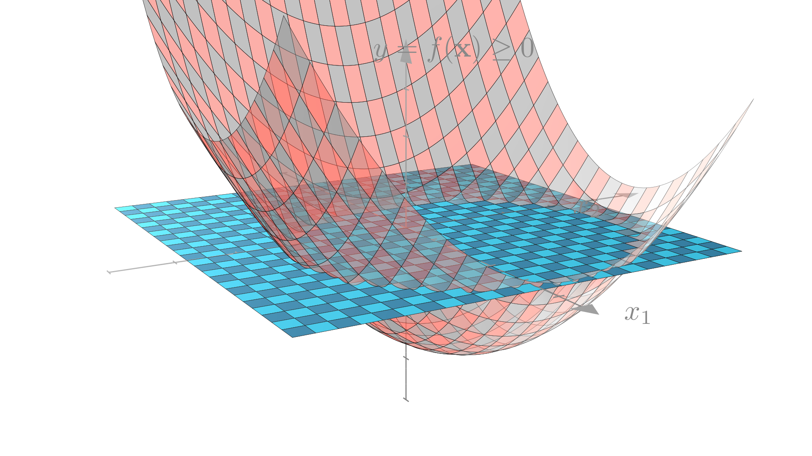

Plot = import("https://esm.sh/@observablehq/plot")
d3 = require("d3@7")
topojson = require("topojson")
MathJax = require("https://cdnjs.cloudflare.com/ajax/libs/mathjax/3.2.2/es5/tex-svg.min.js").catch(() => window.MathJax)
tf = require("https://cdn.jsdelivr.net/npm/@tensorflow/tfjs@latest/dist/tf.min.js").catch(() => window.tf)
THREE = {
const THREE = window.THREE = await require("three@0.130.0/build/three.min.js");
await require("three@0.130.0/examples/js/controls/OrbitControls.js").catch(() => {});
await require("three@0.130.0/examples/js/loaders/SVGLoader.js").catch(() => {});
return THREE;
}
function sample(f, start, end, nsamples=100) {
let arr = [...Array(nsamples).keys()]
let dist = end - start
function arrmap(ind) {
const x = (ind * dist) / nsamples + start;
return [x, f(x)];
}
return arr.map(arrmap)
}
function sigmoid(x){
return 1 / (1 + Math.exp(-x));
}
function sum(x) {
let s = 0;
for (let i = 0; i < x.length; i++ ) {
s += x[i];
}
return s;
}
function mean(x) {
let s = 0;
for (let i = 0; i < x.length; i++ ) {
s += x[i];
}
return s / x.length;
}
function cross_ent(x, y) {
return y ? -Math.log(sigmoid(x)) : -Math.log(sigmoid(-x));
}
function se(x, y) {
return (x - y) * (x - y);
}
function shuffle(array) {
let currentIndex = array.length, randomIndex;
// While there remain elements to shuffle.
while (currentIndex > 0) {
// Pick a remaining element.
randomIndex = Math.floor(Math.random() * currentIndex);
currentIndex--;
// And swap it with the current element.
[array[currentIndex], array[randomIndex]] = [
array[randomIndex], array[currentIndex]];
}
return array;
}
function acc(x, y) {
return Number(y == (x > 0));
}
function grid_func(f, width, height, x1, y1, x2, y2) {
let values = new Array(width * height);
const xstride = (x2 - x1) / width;
const ystride = (y2 - y1) / height;
let y = 0;
let x = 0;
let ind = 0;
for (let i = 0; i < height; i++ ) {
for (let j = 0; j < width; j++, ind++) {
x = x1 + j * xstride;
y = y1 + i * ystride;
values[ind] = f(x, y);
}
}
return {width: width, height: height, x1: x1, y1: y1, x2: x2, y2: y2, values: values};
}
function get_accessors(keys, byindex=false) {
let isString = value => typeof value === 'string';
let index = 0;
let indexmap = {};
let accessors = [];
for (let i = 0; i < keys.length; i++){
let k = keys[i];
if (Array.isArray(k)) {
let access = isString(k[0]) ? (x => x[k[0]]) : k[0];
if (byindex) {
if (isString(k[0]) && !(k[0] in indexmap)) {
indexmap[k[0]] = index;
index++;
}
let accessindex = indexmap[k[0]];
access = x => x[accessindex];
let process = k[1];
let final_access = x => process(access(x));
accessors.push(final_access);
}
else {
let process = k[1];
let final_access = x => process(access(x));
accessors.push(final_access);
}
}
else {
let access = isString(k) ? (x => x[k]) : k;
if (byindex) {
if (isString(k) && !(k in indexmap)) {
indexmap[k] = index;
index++;
}
let accessindex = indexmap[k];
access = x => x[accessindex];
}
accessors.push(access);
}
}
return accessors;
}
function predict(obs, weights, keys=["0", "1", "2", "3"], byindex=false) {
let isString = value => typeof value === 'string';
let accessors = get_accessors(keys, byindex);
let output = weights[0];
let wi = 1;
for (let i = 0; (i < keys.length) && (wi < weights.length); i++, wi++){
output += weights[wi] * accessors[i](obs);
}
return output;
}
function mean_loss(f, data, weights, keys, label, l2=0) {
let reg = 0;
if (l2 > 0){
for (let i = 1; i < weights.length; i++) {
reg += weights[i] * weights[i];
}
}
const isString = value => typeof value === 'string';
const get_label = isString(label) ? (x => x[label]) : label;
return mean(data.map(x => f(predict(x, weights, keys), get_label(x)))) + l2 * reg;
}
function get_domains(data, accessors, margin=0.1) {
let domains = [];
for (let i = 0; i < accessors.length; i++){
let xdomain = d3.extent(data, accessors[i]);
let xdsize = (xdomain[1] - xdomain[0]);
let xmin = xdomain[0] - xdsize * margin;
let xmax = xdomain[1] + xdsize * margin;
domains.push([xmin, xmax]);
}
return domains;
}
function logisticPlot2d(data, weights, keys, label, interval=0.05) {
const accuracy = mean_loss(acc, data, weights, keys, label);
let isString = value => typeof value === 'string';
let accessors = get_accessors(keys);
let index_accessors = get_accessors(keys, true);
let domains = get_domains(data, accessors);
const get_label = isString(label) ? (x => x[label]) : label;
return Plot.plot({
x: {tickSpacing: 80, label: "x"},
y: {tickSpacing: 80, label: "y"},
title: "Accuracy: " + accuracy.toFixed(3),
color: {type: "linear", legend: true, scheme: "BuRd", domain: [-0.5, 1.5]},
marks: [
Plot.contour({
fill: (x, y) => sigmoid(predict([x, y], weights, index_accessors)),
x1: domains[0][0], y1: domains[1][0], x2: domains[0][1], y2: domains[1][1], interval: interval,
}),
Plot.dot(data, {x: accessors[0], y: accessors[1], stroke: x=> (get_label(x) ? 1.35 : -0.35)})
]
});
}
function logisticLossPlot2d(data, weights, keys, label) {
const loss = mean_loss(cross_ent, data, weights, keys, label);
let isString = value => typeof value === 'string';
let accessors = get_accessors(keys);
let index_accessors = get_accessors(keys, true);
let domains = get_domains(data, accessors);
const get_label = isString(label) ? (x => x[label]) : label;
return Plot.plot({
x: {tickSpacing: 80, label: "x"},
y: {tickSpacing: 80, label: "y"},
title: "Loss: " + loss.toFixed(3),
color: {type: "linear", legend: true, scheme: "BuRd", domain: [0, 5]},
marks: [
Plot.contour({
value: (x, y) => predict([x, y], weights, index_accessors),
fillOpacity: 0.2,
stroke: "black", x1: domains[0][0], y1: domains[1][0], x2: domains[0][1], y2: domains[1][1],
thresholds: [-1e6, 0, 0.00001]
}),
Plot.dot(data, {x: accessors[0], y: accessors[1], stroke: x=> cross_ent(predict(x, weights, keys), get_label(x)),
strokeOpacity: 0.5 })
]
});
}
function lossPlot2d(f, data, keys, label, l2=0, res=100, x1=-40, y1=-0.015, x2=40, y2=0.015, vmax=50, nlines=25, ctype="sqrt", scale=(x => x)) {
let grid = 0;
function lossFunc(w, b) {
return scale(mean_loss(f, data, [w, b], keys, label, l2));
}
grid = grid_func(lossFunc,
res, res, x1, y1, x2, y2
);
function plot2d(weights) {
let w = weights;
if (!(Array.isArray(w[0]))){
w = [w];
}
var arrows = w.slice(0, w.length - 1).map(function(e, i) {
return e.concat(w[i+1]);
});
let interval= vmax / nlines;
let thresholds = [];
for (let i = 0; i < nlines; i++) {
thresholds.push(i * interval);
}
let loss = mean_loss(f, data, w[w.length - 1], keys, label, l2)
return Plot.plot({
title: "Loss: " + loss.toFixed(3),
color: {type: "linear", legend: true, label: "Loss", scheme: "BuRd", domain: [0, vmax], type: ctype},
marks: [
Plot.contour(grid.values, {width: grid.width, height: grid.height, x1: grid.x1, x2:grid.x2, y1: grid.y1, y2: grid.y2,
stroke: Plot.identity, thresholds: thresholds}),
Plot.dot(w),
Plot.arrow(arrows, {x1: "0", y1: "1", x2: "2", y2: "3", stroke: "black"})
]
})
}
return plot2d;
}
function regressionPlot(data, weights, keys, label, l2, f=se, stroke="") {
let loss = mean_loss(f, data, weights, keys, label, l2);
let isString = value => typeof value === 'string';
let accessors = get_accessors(keys);
let index_accessors = get_accessors(keys, true);
let domains = get_domains(data, get_accessors([label].concat(keys)));
const get_label = isString(label) ? (x => x[label]) : label;
let stroke_shade = stroke;
if (stroke == "") {
stroke_shade = (x => f(predict(x, weights, keys), get_label(x)))
}
return Plot.plot({
y: {domain: domains[0]},
title: "Loss: " + loss.toFixed(3),
color: {type: "linear", legend: true, label: "Loss", scheme: "BuRd", domain: [0, 100]},
marks: [
Plot.line(sample((x) => predict([x], weights, index_accessors), domains[1][0], domains[1][1]), {stroke: 'black'}),
Plot.dot(data, {x: accessors[0], y: get_label, stroke: stroke_shade })
]
})
}
function errorPlot(data, weights, keys, label, f, options={}) {
const isString = value => typeof value === 'string';
const get_label = isString(label) ? (x => x[label]) : label;
let errors = data.map(x => [predict(x, weights, keys) - get_label(x), f(predict(x, weights, keys), get_label(x))]);
let sigma = (options['sigma'] || 1);
let plots = [];
const xdomain = (options['xdomain'] || [-30, 30]);
const ydomain = (options['ydomain'] || [0, 0.1]);
if (options['plotnormal']){
let pdf = x => Math.exp(-0.5 * x * x / sigma) * ydomain[1];
let normal = Plot.line(sample(pdf, xdomain[0], xdomain[1]), {stroke: 'crimson'});
plots.push(normal);
}
if (options['plotlaplace']){
let pdf = x => Math.exp(-0.5 * Math.abs(x) / sigma) * ydomain[1];
let normal = Plot.line(sample(pdf, xdomain[0], xdomain[1]), {stroke: 'green'});
plots.push(normal);
}
return Plot.plot({
y: {grid: true, domain: ydomain},
x: {domain: xdomain},
color: {type: "linear", legend: true, label: "Loss", scheme: "BuRd", domain: [0, 100]},
marks: [
//Plot.rectY(errors, Plot.binX({y: "count", fill: x => mean(x.map(v => v[1]))}, {x: "0"})),
Plot.rectY(errors, Plot.binX({y: "proportion"}, {x: "0", fill: 'steelblue', interval: 1})),
Plot.ruleY([0])
].concat(plots)
})
}
function nnPlot(data, weights, keys, label, l2, f=se, stroke="", options=[]) {
let loss = mean_loss(f, data, weights, keys, label, l2);
let isString = value => typeof value === 'string';
let accessors = get_accessors(keys);
let index_accessors = get_accessors(keys, true);
let domains = get_domains(data, get_accessors([label].concat(keys)));
const get_label = isString(label) ? (x => x[label]) : label;
let stroke_shade = stroke;
if (stroke == "") {
stroke_shade = (x => f(predict(x, weights, keys), get_label(x)))
}
let a = []
if (options.indexOf("Show feature transforms") >= 0){
a = [Plot.line(sample((x) => keys[1][1](x), domains[1][0], domains[1][1]), {stroke: 'red'}),
Plot.line(sample((x) => keys[2][1](x), domains[1][0], domains[1][1]), {stroke: 'blue'})]
}
return Plot.plot({
y: {domain: domains[0]},
title: "Loss: " + loss.toFixed(3),
color: {type: "linear", legend: true, label: "Loss", scheme: "BuRd", domain: [0, 100]},
marks: [
Plot.line(sample((x) => predict([x], weights, index_accessors), domains[1][0], domains[1][1]), {stroke: 'black'}),
Plot.dot(data, {x: accessors[0], y: get_label, stroke: stroke_shade })
].concat(a)
})
}Lecture 4: Feature transforms
Evaluating models
Training and test datasets
To evaluate our model fairly, we will split our dataset into two smaller datasets: a training dataset that we will use to fit our model, and a test or held-out dataset that we will only use to evaluate our model.
\[D = \{ (\mathbf{x}_1, y_1),\ (\mathbf{x}_2, y_2),\ ... \,(\mathbf{x}_N, y_N) \}\quad \longrightarrow \quad \]
\[ D_{train} = \{ (\mathbf{x}_1, y_1),\ (\mathbf{x}_2, y_2),\ ... \,(\mathbf{x}_{Ntrain}, y_{Ntrain}) \},\ D_{test} = \{ (\mathbf{x}_1, y_1),\ (\mathbf{x}_2, y_2),\ ... \,(\mathbf{x}_{Ntest}, y_{Ntest}) \} \]
Training data
| car name | weight | displacement | horsepower | acceleration | |
|---|---|---|---|---|---|
| 0 | chevrolet chevelle malibu | 3504 | 307.0 | 130 | 12.0 |
| 1 | buick skylark 320 | 3693 | 350.0 | 165 | 11.5 |
| 2 | plymouth satellite | 3436 | 318.0 | 150 | 11.0 |
| 3 | amc rebel sst | 3433 | 304.0 | 150 | 12.0 |
| 4 | ford torino | 3449 | 302.0 | 140 | 10.5 |
| ... | ... | ... | ... | ... | ... |
| 295 | dodge colt hatchback custom | 1915 | 98.0 | 80 | 14.4 |
| 296 | amc spirit dl | 2670 | 121.0 | 80 | 15.0 |
| 297 | mercedes benz 300d | 3530 | 183.0 | 77 | 20.1 |
| 298 | cadillac eldorado | 3900 | 350.0 | 125 | 17.4 |
| 299 | peugeot 504 | 3190 | 141.0 | 71 | 24.8 |
300 rows × 5 columns
Test data
| car name | weight | displacement | horsepower | acceleration | |
|---|---|---|---|---|---|
| 300 | oldsmobile cutlass salon brougham | 3420 | 260.0 | 90 | 22.2 |
| 301 | plymouth horizon | 2200 | 105.0 | 70 | 13.2 |
| 302 | plymouth horizon tc3 | 2150 | 105.0 | 70 | 14.9 |
| 303 | datsun 210 | 2020 | 85.0 | 65 | 19.2 |
| 304 | fiat strada custom | 2130 | 91.0 | 69 | 14.7 |
| ... | ... | ... | ... | ... | ... |
| 393 | ford mustang gl | 2790 | 140.0 | 86 | 15.6 |
| 394 | vw pickup | 2130 | 97.0 | 52 | 24.6 |
| 395 | dodge rampage | 2295 | 135.0 | 84 | 11.6 |
| 396 | ford ranger | 2625 | 120.0 | 79 | 18.6 |
| 397 | chevy s-10 | 2720 | 119.0 | 82 | 19.4 |
98 rows × 5 columns
Training and test datasets
For example, we might see that our model does well on the data it was fit on and poorly on new data.
Training data
Test data
Spliting data in practice
In general a good rule of thumb is to reserve \(30\%\) of you data for evaluation, but anywhere from \(10\%\) to \(50\%\) is common in practice.
It is also very import very important to split data at random.
Training data
Test data
Spliting data in practice
In numpy we can accomplish this splitting by creating a random order of observations and applying it to both \(X\) and \(y\)
order = np.arange(X.shape[0]) # Get an array of indices (1...N)
np.random.shuffle(order) # Permute the data
numTrain = int(X.shape[0] * 0.7) # Get the number of training obs. (70%)
trainInds = order[:numTrain] # Get the indices of training obs. (70%)
testInds = order[numTrain:] # Get the indices of test obs. (30%)
# Get the data and labels for each split
trainX, trainy = X[trainInds], y[trainInds]
testX, testy = X[testInds], y[testInds]Feature Transforms
Linear predictions
In the previous two lectures, we saw that the linear regression model makes predictions of the form:
\[ f(\mathbf{x}) = \mathbf{x}^T\mathbf{w} = \sum_{i=1}^n x_i w_i \]
Meaning that the output will be a weighted sum of the features of the input.
\[ \text{Predicted MPG} = f(\mathbf{x})= \]
\[ (\text{weight})w_1 + (\text{horsepower})w_2 + (\text{displacement})w_3 + (\text{0-60mph})w_4 + b \]
Linear predictions
Graphically we see this corresponds to a prediction function that is a line or a plane.
Non-linear data
Unfortunately, in the real world the relationship between inputs and outputs is not always linear.
We see that there is no straight line that is a good fit to our data.
Non-linear data
We see this with our real-world fuel efficiency dataset as well.
Polynomial functions
If we’re trying to approximate a non-linear relationship between inputs and outputs, it follows that we may want to fit a non-linear approximation.
One of the simplest types of non-linear functions we could use are polynomial functions.
The simplest type of non-linear polynomial is a quadratic function, which involves powers of up to \(2\).
\[ f(x) = w_2 x^2 + w_1x +b \]
Manim Community v0.18.1

Quadratic functions
A quadratic function of \(2\) variables can be written as:
\[ f(x, y) = w_5 x^2 + w_4y^2 + w_3 xy + w_2x + w_1y +b \]
Cubic functions
Similarly a cubic function involves powers up to 3:
\[ f(x) = w_3 x^3 + w_2 x^2 + w_1x +b \]
Manim Community v0.18.1

Polynomial functions
In general the degree of a polynomial is the largest exponent in any term of the polynomial (or sum of exponents for terms involving more than 1 input). For example we can look at 2 different degree 4 polynomial functions:
\[ f(x, y) = 3 x^4 + 2 xy + y - 2 \]
\[ f(x, y) = -2 x^2y^2 + 2 x^3 + y^2 - 5 \]
Polynomial functions as vector functions
We can also write polynomial functions as vector-input functions. For example a quadratic function of two variables could be written as:
\[ f(\mathbf{x}) = w_5 x_2^2 + w_4x_1^2 + w_3 x_1 x_2 + w_2x_2 + w_1x_1 +b \]
From this form we see that a polynomial is a weighted sum of powers of \(\mathbf{x}\)!
\[ w_5 x_2^2 + w_4x_1^2 + w_3 x_1 x_2 + w_2x + w_1y +b = \begin{bmatrix} x_1 \\ x_2 \\ x_1 x_2 \\ x_1^2 \\ x_2^2 \\ 1 \end{bmatrix} \cdot \begin{bmatrix} w_1 \\ w_2 \\ w_3 \\ w_4 \\ w_5 \\ b \end{bmatrix} \]
Quadratic feature transforms
Let’s consider the mapping from \(\mathbf{x}\) to powers of the elements of \(\mathbf{x}\). We’ll call this mapping \(\phi\):
\[ \begin{bmatrix} x_1 \\ x_2 \end{bmatrix}\underset{\phi}{\longrightarrow}\begin{bmatrix} x_1 \\ x_2 \\ x_1 x_2 \\ x_1^2 \\ x_2^2 \\ 1 \end{bmatrix} \]
In this quadratic example \(\phi\) is a non-linear function that maps vectors to vectors \((\mathbb{R}^2 \rightarrow \mathbb{R}^6)\). We call this a quadratic feature transform
\[ \phi(\mathbf{x}) = \begin{bmatrix} x_1 \\ x_2 \\ x_1 x_2 \\ x_1^2 \\ x_2^2 \\ 1 \end{bmatrix} \]
Quadratic feature transforms
\[ \phi(\mathbf{x}) = \begin{bmatrix} x_1 \\ x_2 \\ x_1 x_2 \\ x_1^2 \\ x_2^2 \\ 1 \end{bmatrix} \] With this mapping we can our quadratic prediction function simply as:
\[ f(\mathbf{x})=\phi(\mathbf{x})^T \mathbf{w} \]
This is a linear function of \(\phi(\mathbf{x})\) and \(\mathbf{w}\)!
Quadratic feature transforms
As a simpler example, let’s look at the case where our input has only a single element \((x_1)\).
\[ f(\mathbf{x})=\phi(\mathbf{x})^T \mathbf{w} = w_2 x_1^2 + w_1x_1 +b, \quad \phi(\mathbf{x}) = \begin{bmatrix} x_1 \\ x_1^2 \\ 1 \end{bmatrix} \]
Fitting quadratic regression
If we treat \(\phi(\mathbf{x})\) as our new set of inputs, we see that we can apply all the same tools of linear regression that we learned before.
\[ f(\mathbf{x})=\phi(\mathbf{x})^T \mathbf{w}, \quad \phi(\mathbf{x}) = \begin{bmatrix} x_1 \\ x_2 \\ x_1 x_2 \\ x_1^2 \\ x_2^2 \\ 1 \end{bmatrix} \]
We can then define a quadratic probabilistic model as:
\[ y_i \sim N\big(\phi(\mathbf{x}_i)^T\mathbf{w}, \sigma^2\big) \]
Fitting quadratic regression
\[ y_i \sim N\big(\phi(\mathbf{x}_i)^T\mathbf{w}, \sigma^2\big) \] The corresponding negative log-likelihood loss becomes
\[ \textbf{Loss}(\mathbf{w})=\textbf{NLL}(\mathbf{w}, \mathbf{X}, \mathbf{y})=- \sum_{i=1}^N \log p(y_i \mid \mathbf{x}_i, \mathbf{w}) \]
\[ = \frac{1}{2\sigma^2} \sum_{i=1}^N\big(y_i - \phi(\mathbf{x}_i)^T\mathbf{w}\big)^2 + N \log \sigma \sqrt{2 \pi} \]
Fitting quadratic regression
\[ y_i \sim N\big(\phi(\mathbf{x}_i)^T\mathbf{w}, \sigma^2\big) \]
We can now find the optimal \(\mathbf{w}\) by once again minimizing this loss!
\[ \mathbf{w}^* = \underset{\mathbf{w}}{\text{argmin}} \textbf{NLL}(\mathbf{w}, \mathbf{X}, \mathbf{y}) \]
Fitting quadratic regression
\[ \textbf{NLL}(\mathbf{w}, \mathbf{X}, \mathbf{y})=y_i \sim N\big(\phi(\mathbf{x}_i)^T\mathbf{w}, \sigma^2\big) \] We see that the gradient doesn’t change, it simply involves \(\phi(\mathbf{x}_i)\) instead of \(\mathbf{x}_i\).
\[ \nabla_{\mathbf{w}}\textbf{NLL}(\mathbf{w}, \mathbf{X}, \mathbf{y}) = \frac{1}{2\sigma^2}\sum_{i=1}^N \big(\phi(\mathbf{x}_i)^T\mathbf{w} - y_i\big)\phi(\mathbf{x}_i) \] This is because we are only taking the gradient with respect to \(\mathbf{w}\). From the perspective of \(\mathbf{w}\), the prediction funciton is still linear.
Quadratic regression on real data
Let’s look at our new quadratic regression model on the problem of predicting fuel efficiency from a car’s weight.
\[ f(\mathbf{x})=\phi(\mathbf{x})^T \mathbf{w} = w_2 x_1^2 + w_1x_1 +b, \quad \phi(\mathbf{x}) = \begin{bmatrix} x_1 \\ x_1^2 \\ 1 \end{bmatrix} \]
We see that by varying \(w_2\), we can now fit a curve to our data and get a better overall loss!
Quadratic logistic regression
Just like with our regression example, we can apply our quadratic feature transform to the logistic regression model as well! In this case our prediction function becomes:
\[ f(\mathbf{x}) = \mathbf{I}(\phi(\mathbf{x})^T\mathbf{w} \geq 0), \quad \phi(\mathbf{x}) = \begin{bmatrix} x_1 \\ x_2 \\ x_1 x_2 \\ x_1^2 \\ x_2^2 \\ 1 \end{bmatrix} \]
Our Bernoulli probabilistic model becomes:
\[ y_i \sim \mathbf{Bernoulli}\big(\mathbf{ \sigma(\phi(\mathbf{x}_i)^T\mathbf{w} })\big), \quad p(y_i = 1\mid \mathbf{x}_i, \mathbf{w}) = \sigma\big(\phi(\mathbf{x}_i)^T\mathbf{w}\big) \]
Quadratic logistic regression
The corresponding negative log-likelihood is:
\[ \mathbf{NLL}(\mathbf{w}, \mathbf{X}, \mathbf{y}) = -\sum_{i=1}^N \log\sigma\big((2y_i-1)\phi(\mathbf{x}_i)^T\mathbf{w}\big) \]
\[ y_i \sim \mathbf{Bernoulli}\big(\mathbf{ \sigma(\phi(\mathbf{x}_i)^T\mathbf{w} })\big), \quad p(y_i = 1\mid \mathbf{x}_i, \mathbf{w}) = \sigma\big(\phi(\mathbf{x}_i)^T\mathbf{w}\big) \] Which we can once again optimize with gradient descent.
Quadratic logistic regression
With this approach our decision boundary is no longer restricted to be a line!
Quadratic logistic regression
Recall that our linear classifier made predictions by thresholding a linear function. Our quadratic classifer thresholds a quadratic function of 1 or more variables.
Linear decision boundary
Manim Community v0.18.1

Quadratic decision boundary
Manim Community v0.18.1

General polynomial transforms
We’re not restricted to just quadratic transform! For example, for a model with \(1\) input, we could definite a cubic feature transform as:
\[ \begin{bmatrix} x_1 \end{bmatrix}\underset{\phi}{\longrightarrow}\begin{bmatrix} x_1 \\ x_1^2 \\ x_1^3\\ 1 \end{bmatrix} \]
Our prediction function will be:
\[ f(\mathbf{x})=\phi(\mathbf{x})^T \mathbf{w} = w_3 x_1^3 + w_2 x_1^2 + w_1x_1 +b, \quad \phi(\mathbf{x}) = \begin{bmatrix} x_1 \\ x_1^2\\ x_1^3 \\ 1 \end{bmatrix} \]
General polynomial transforms
\[ f(\mathbf{x})=\phi(\mathbf{x})^T \mathbf{w} = w_3 x_1^3 + w_2 x_1^2 + w_1x_1 +b, \quad \phi(\mathbf{x}) = \begin{bmatrix} x_1 \\ x_1^2\\ x_1^3 \\ 1 \end{bmatrix} \] We can apply this to our regression model for fuel efficiency as before.
General polynomial transforms
We can also similarly define general polynomial transforms using polynomials of higher degrees or a subset of the features.
For example we might define the following quadratic transform for 3-feature inputs:
\[ \phi(\mathbf{x}) = \begin{bmatrix} x_1 \\ x_2 \\ x_3 \\ x_1^2\\ x_2^2 \\ x_3^2 \\ 1 \end{bmatrix} \]
General feature transforms
We can also use any scalar non-linear functions we want. For example we could define a transform using \(\sin\) and \(\cos\):
\[ \phi(\mathbf{x}) = \begin{bmatrix} x_1 \\ x_2 \\ \sin(x_1) \\ \sin(x_2) \\ \cos(x_1) \\ \cos(x_2) \\ 1 \end{bmatrix} \]
Or using the sigmoid function:
\[ \phi(\mathbf{x}) = \begin{bmatrix} x_1 \\ x_2 \\ \sigma(x_1) \\ \sigma(x_2) \\ 1 \end{bmatrix} \]
General feature transforms
We can see how different features allow us to define different nonlinear functions.
\[ f(\mathbf{x})=\phi(\mathbf{x})^T \mathbf{w} = w_3 e^{x_1} + w_2 \sin(x_1) + w_1x_1^2 +b ,\quad \phi(\mathbf{x}) = \begin{bmatrix} x_1 \\ x_1^2 \\ \sin(x_1) \\ e^{x_1} \\ 1 \end{bmatrix} \]
General feature transforms
General feature transforms
In numpy we can write this as:
sin_X = np.sin(X) # sin(x)
squared_X = X ** 2 # x^2
exp_X = np.exp(X) # e^x
ones = np.ones((X.shape[0], 1)) # Column of 1s
transformedX = np.concatenate([X, squared_X, sin_X, exp_X, ones], axis=1)Kernel methods
On the board!